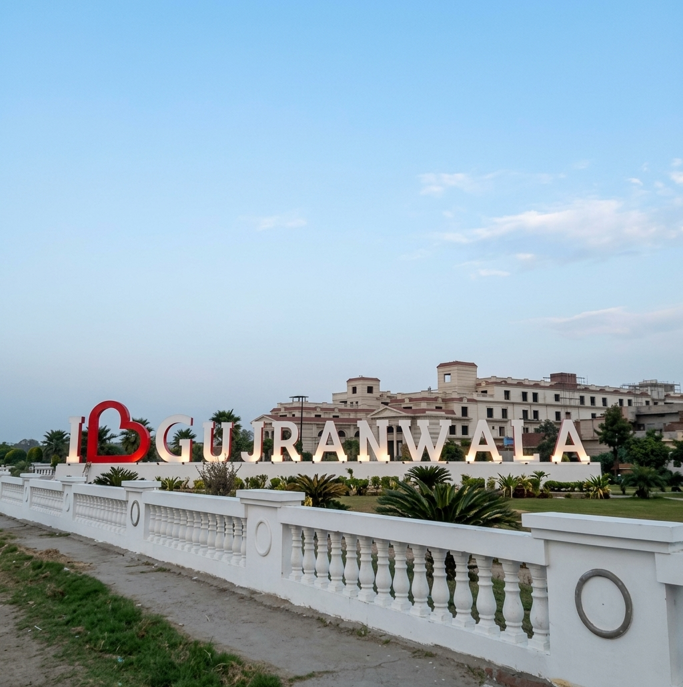

Home | Famous Places | Famous Food

Gujranwala is one of the largest cities of Punjab, Pakistan. It is located on the main road between Lahore and Islamabad and is an important centre of industry and trade.
The city is famous for its wrestlers, delicious food and hard-working people. Because of its strong wrestling tradition, Gujranwala is often called the "City of Wrestlers".
"Gujranwala, the City of Wrestlers, where strength and good food go hand in hand."
Gujranwala has a long history and is linked with Maharaja Ranjit Singh, who was born in this area in the 18th century.
Today the city is known for its factories, markets and busy bazaars.
Explore the Famous Places or taste the Famous Food of Gujranwala.